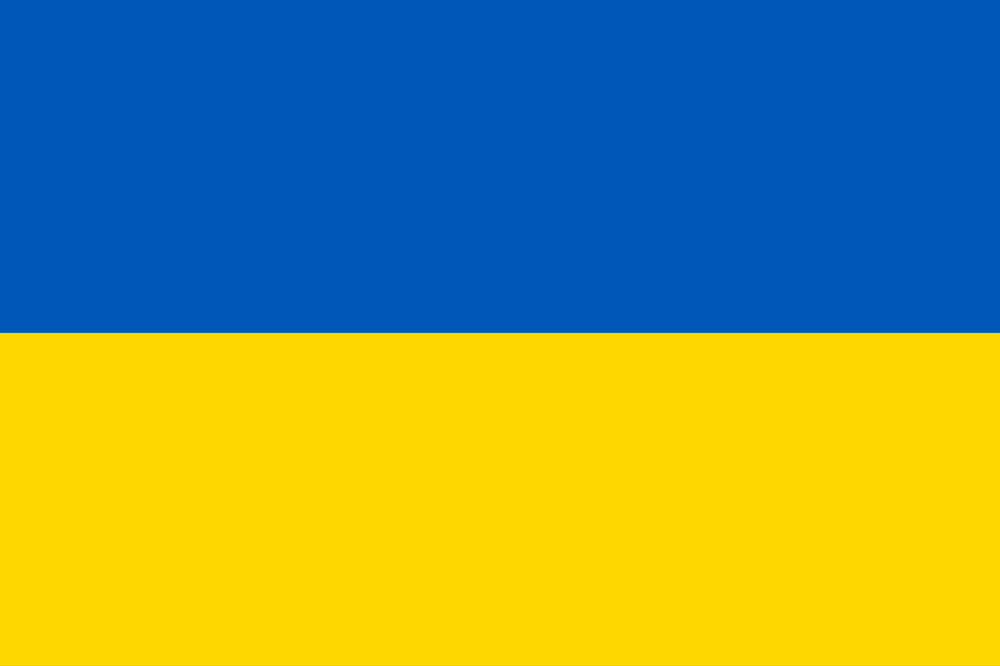

<header class="site-header">
    <div class="logo-language-container">
        <a href="../index/" class="logo-container">
            
        </a>
    </div>

    <button class="menu-toggle" aria-label="Obrir menú">
        ☰
    </button>

    <nav class="nav-bar">
        <ul>
            <li><a href="../calendar/">Horari de Misses</a></li>
            <li><a href="../blog/">Fotos i Vídeos d'Esdeveniments Parroquials</a></li>
        </ul>

        <a href="../contact/">
            <button class="colaborate-button">Contacte</button>
        </a>
    </nav>
</header>

<div class="language-selector">
    <button class="language-main-button" id="language-main-button">
        
    </button>
    <div class="language-options" id="language-options">
        <a href="../../es/index/index.html" class="language-option">
             Español
        </a>
        <a href="../../ukr/index/index.html" class="language-option">
             Українська
        </a>
        <a href="../../va/index/index.html" class="language-option">
             Valencià
        </a>
    </div>
</div>